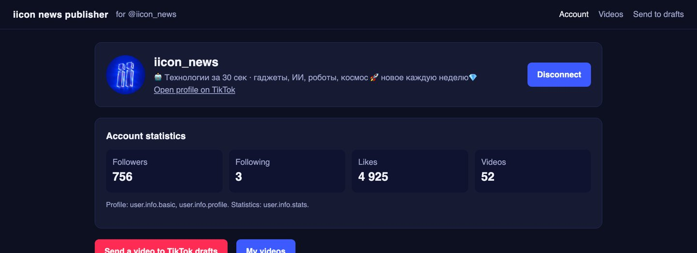
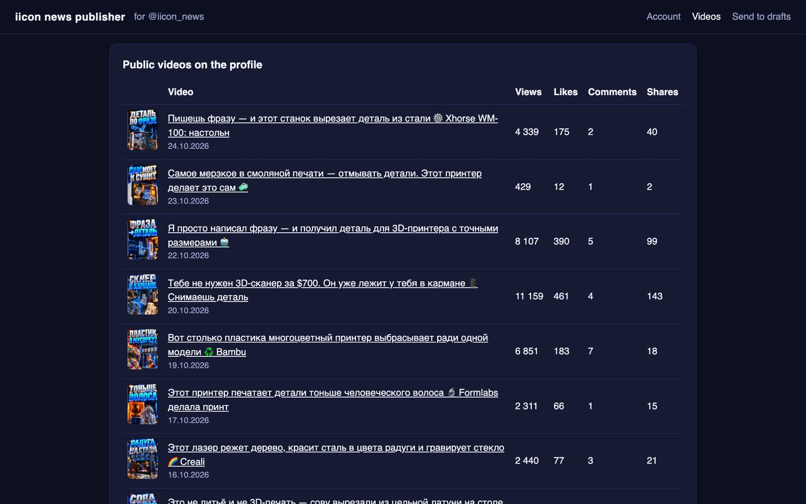
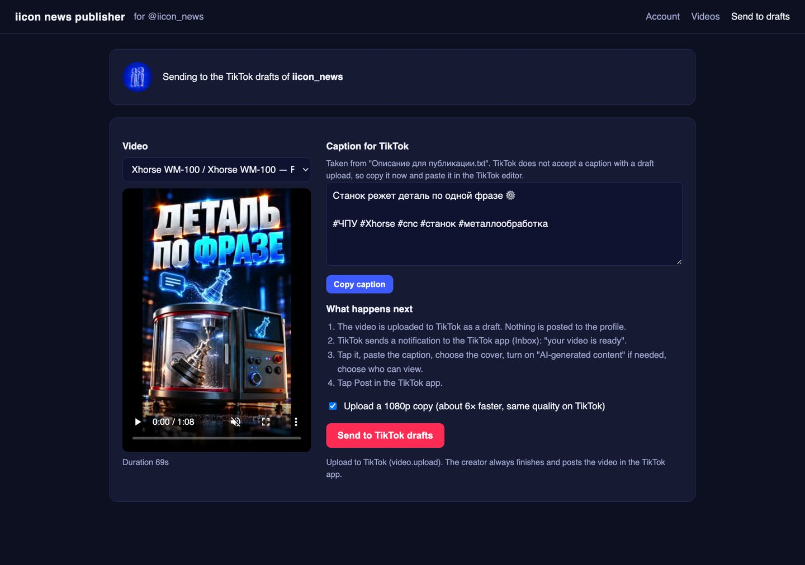

iicon news publisher
The desktop app the iicon_news team uses to send finished videos to TikTok and to follow how the account's videos perform. It connects to TikTok with the official TikTok for Developers APIs (Login Kit, Display API and Content Posting API).
The app is used for the iicon_news TikTok account. It is not sold or offered as a public service.
How it works
Sign in with TikTok
The creator clicks “Continue with TikTok” and approves access on TikTok's own page (Login Kit). The app then shows the account's name, avatar and statistics: followers, following, likes and number of videos.

See how videos perform
The Videos page lists the account's public TikTok videos with views, likes, comments and shares, so the creator can compare videos and plan the next ones.

Send a finished video to TikTok drafts
The creator picks a finished video. The app shows the caption prepared for TikTok with a copy button, then uploads the video to TikTok as a draft (Upload to TikTok). Nothing is posted to the profile by the app.

Finish and post in the TikTok app
TikTok sends a notification to the creator's inbox. The creator opens the draft in the TikTok app, pastes the caption, chooses the cover, marks AI-generated content, chooses who can view the video and posts it.
The final decision to post is always made by the creator inside the TikTok app. The app never posts, edits or deletes videos on the profile and never posts to other accounts.
TikTok permissions and why the app needs them
| Product / scope | What the app does with it |
|---|---|
Login Kit · user.info.basic | Signs the creator in and shows the account name and avatar. |
user.info.profile | Shows the profile link, bio and verification status on the Account page. |
user.info.stats | Shows follower, following, like and video counts. |
video.list | Lists the account's public videos with views, likes, comments and shares. |
Content Posting API · video.upload | Uploads a finished video to the creator's TikTok drafts. The creator finishes and posts it in TikTok. |
Data and security
Runs on the creator's computer
The app is a desktop program. Tokens and statistics stay on that computer and are sent only to TikTok's API.
Only your own account
The app reads data about the connected account only. It does not collect data about viewers or other users.
Disconnect any time
Use “Disconnect” in the app or remove access in TikTok: Settings and privacy → Security and permissions → Apps and services permissions.
Details: Privacy Policy and Terms of Service. Questions: Contact.